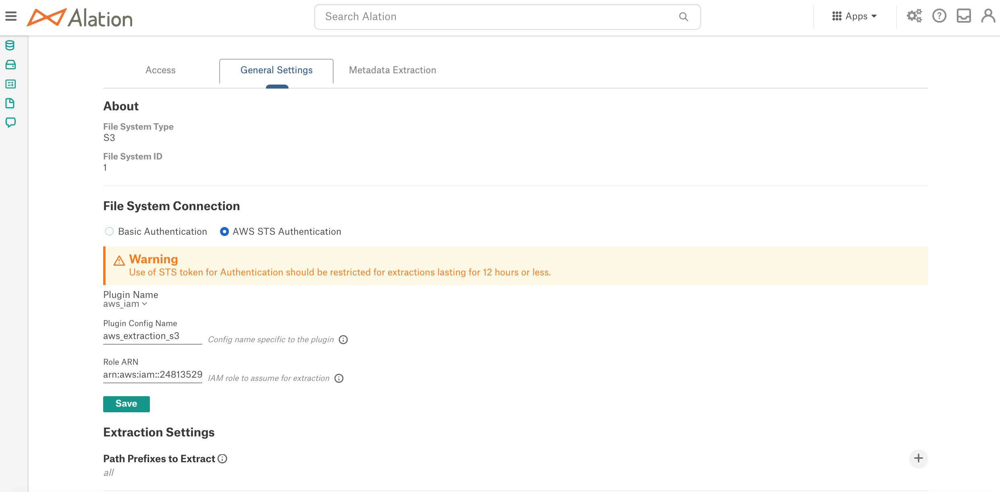

Configure Extraction with AWS IAM Authentication¶
Applies from version 2021.3
Note
This functionality is in beta release.
For the Alation application instances hosted in AWS EC2 and Amazon sources, Alation supports metadata extraction (MDE) and query log ingestion (QLI) using authentication with AWS IAM. This configuration can be performed for:
Amazon Athena (Custom DB)
Amazon Redshift (native connector)
Amazon S3 file system source
When authentication for MDE goes through AWS IAM, the AuthService on the Alation server requests an STS token from AWS IAM in order to access AWS resources using the AWS IAM role defined in the MDE configuration:
{kind=link}
In order to set up MDE with AWS IAM authentication, you will need to perform configuration steps in both AWS Management Console and on the backend of the Alation server. You may need the assistance of your AWS admin to perform the configuration on the AWS side.
Important
STS tokens have a maximum duration of 12 hours. AuthService cannot refresh STS tokens while the metadata extraction is in progress (a known limitation). Metadata extraction that takes longer than 12 hours will fail because of the STS token expiration.
STEP 1: Configuration in AWS¶
Determine which AWS resources you wish to catalog in Alation.
In the AWS IAM service, create an IAM policy (for example, <read_resources_policy>) that grants access to the AWS resources you are going to catalog. You can also use an existing policy that includes the required permissions:
For an Amazon S3 file system source, your <read_resources_policy> should grant the read access to the S3 buckets you wish to catalog in Alation.
For an Amazon Athena data source, Alation recommends using the
AmazonAthenaFullAccesspolicy. You may need to edit the inline policies as prescribed by your company’s AWS access rules.For an Amazon Redshift data source, Alation recommends the SELECT privileges on schemas and tables that you want to add to the catalog, as well as on a number of system tables. See Create Service Account for information about the required privileges.
Create an IAM role (for example, <read_resources_role>) selecting the Type of Trusted Entity to be AWS Service and Use Case to be EC2. To this role, attach the policy you created in step 2 (<read_resources_policy>) or an existing policy that fulfills the access requirements for MDE and QLI. This role will be assumed by the Alation application when performing MDE and QLI from your AWS source.
Save the ARN of this role (<read_resources_role>). It will be required for the next configuration steps in AWS and later during the configuration on the Alation server.
Create an IAM policy (for example, <assume_role_policy>) that allows the AssumeRole action for the IAM role created in step 3. When creating this policy:
Select STS as Service
Under Actions > Access Level > Write, select AssumeRole
Under Resources, specify the ARN of the role that gives access to the AWS resources (your <read_resources_role> created in step 3):

Create another IAM role, selecting the Type of Trusted Entity to be AWS Service and Use Case to be EC2 (for example, <instance_profile_role_for_mde>). When creating the role:
Attach the policy you created in step 5 to this role (your <assume_role_policy>). For Amazon S3 or Athena sources, you only need to add this one policy.
If you are performing this configuration for Amazon Redshift, create and attach an additional policy that allows the GetClusterCredential action for the Redshift service. As a result, your <instance_profile_role_for_mde> will be associated with 2 policies:
your <assume_role_policy> created in step 5
an additional policy that grants GetClusterCredential for Redshift:

Note down the ARN of this role (your <instance_profile_role_for_mde>).
Open the properties page of the role that gives access to the AWS resources (your <read_resources_role> created in step 3). Edit the Trust Relationship of this role by adding your <instance_profile_role_for_mde> created in step 6 as the Principal. Save the changes:
In the AWS EC2 service, go to the properties page of the EC2 instance that hosts the Alation application.
Expand the Actions menu and click Security. Then click Modify IAM role:
From the list of roles, select your <instance_profile_role_for_mde> created in step 6 and save. This will allow your EC2 instance that hosts the Alation application to assume the role that allows access to specific AWS resources (your <read_resources_role> created in step 3).
{kind=link}
STEP 2: Enable AuthService¶
Note
Enabling of AuthService requires a redeployment of alation_conf and a restart of the Alation server. Alation recommends to schedule this configuration at a time when users are the least active in the Catalog. A redeployment of alation_conf and a restart will cause the Alation user interface to reload and users may lose their unsaved work.
From version 2022.2, AuthService is enabled by default. In versions before 2022.2, perform the following configuration on the Alation server to enable AuthService:
Use SSH to connect to your Alation host.
Enter the Alation shell.
sudo /etc/init.d/alation shell
Check if the AuthService is enabled on your instance by checking the current value of the alation_conf parameter
alation.authentication.service.enabled.alation_conf alation.authentication.service.enabledIf the current value is
True, the AuthService is already enabled. If it’sFalse, then change the value toTrue.Set the value to
True.alation_conf alation.authentication.service.enabled -s True
Deploy the configuration.
alation_action deploy_conf_allRestart Alation.
alation_action restart_alation
Stay in the Alation shell.
STEP 3: Configuration on the Alation Server¶
This configuration step requires the use of the Alation Django shell.
From the Alation shell, enter the Django shell:
alation_django_shell
Call the AuthService client by running the code below from the Django shell:
from auth_client.auth import Client as AuthClient
Check the status of the AWS IAM plug-in of AuthService using the command below. It should return the status
operational:AuthClient('aws_iam').status_check()
In an editor of your choice, write the code for creating an AuthService configuration using the following pattern and substituting placeholder values with your real values:
AuthClient('aws_iam').configure(operation='create', config={'config_name':'<YOUR_VALUE_HERE>', 'region':'<YOUR_REGION_HERE>', 'sts_duration':'<YOUR_VALUE_IN_SECONDS>', 'redirect_url':'', 'aws_creds_type': 'instance_profile'})
Example:
AuthClient('aws_iam').configure(operation='create', config={'config_name':'extraction_from_aws', 'region':'us-east-1', 'sts_duration':'3600', 'redirect_url':'', 'aws_creds_type': 'instance_profile'})
Note
You can use the same configuration object for several AWS resources if the
regionandsts_durationparameters are the same. If your AWS resources are in different regions or should use separatests_durationvalues for STS tokens, then create a separate configuration object for each source.From the Django shell, run the code you have written. This creates a configuration object with the name you have specified for the parameter
config_name. In the example above, this name isaws_extraction_s3.Note down the name of the configuration object you have created. You will need it for the next configuration steps.
If you are configuring an Amazon Athena or Amazon Redshift data source, you may want to stay in the Django shell to configure the data source to use AuthService for MDE. If you are configuring extraction from S3, exit the shells and continue the configuration in the Alation UI.
To exit the Django shell:
exitTo exit the Alation shell:
exit
Next, configure your source to use this type of authentication.
Amazon S3 File System Source¶
Log in to Alation as a Server Admin.
Create a new file system source of type S3 or open the settings of an existing S3 file system source for which you are setting up MDE Authentication with IAM.
On the Settings page, go to the General Settings tab.
Under File System Connection, select the AWS STS Authentication radio button.
In the field Plugin Config Name, specify the
config_namevalue of the AuthService configuration object that was created during the confirmation in the Django shell of the Alation server.In the Role ARN field, specify the ARN of the role that gives access to the S3 resources you want to catalog. This role was configured on the AWS side (your <read_resources_role>).
Click Save:
Go to the Metadata Extraction tab and perform metadata extraction. Alation should pull in the S3 resources allowed by the corresponding role (your <read_resources_role>).
Amazon Athena Data Source (Custom DB)¶
In order to use authentication with AWS IAM for MDE, your Amazon Athena data source must use a modified version of the Simba driver certified by Alation.
If you are making changes to the configuration of an existing Athena data source, make sure you have selected the required driver and modified the URI.
If your Athena data source does not exist yet, create a new Custom DB source, following the steps described in Athena and with the following changes to enable MDE with AWS IAM authentication:
Use the modified version of the JDBC driver that is recommended for Compose SSO: Update the Simba JDBC Driver for Athena to Support SSO.
Append the following string to the JDBC URI:
AwsCredentialsProviderClass=com.example.CustomSessionCredentialsProvider;
If you are adding a new data source, note that this configuration does not use a service account. You do not need to enter valid credentials in the Add Data Source wizard: click Continue with Errors on the Service Account screen to move through the wizard to the Settings page of the data source:
When the source has been added to Alation, note down its ID: How to Find Data Source ID.
Prepare the value of the
config_nameof the AuthService configuration object you created in STEP 3: Configuration on the Alation Server.Prepare the ARN of the role that grants access to Athena in AWS (your <read_resources_role> from STEP 1: Configuration in AWS.
SSH to the Alation host, enter the Alation shell and then the Django shell:
sudo /etc/init.d/alation shell alation_django_shell
Enable your Athena data source to use AuthService: run the code given below in the Alation Django shell, substituting the placeholder values with your real values:
<ds_id>: the ID of your Athena data source in Alation
<config_name>: the name of the AuthService configuration object
YOUR_ROLE_ARN: the ARN of your <read_resources_role>
8.1 Create a
DSAuthServiceConfigurationobject:conf = DSAuthServiceConfiguration.objects.create(ds=DataSource.objects.get(id=<ds_id>), method_name='aws_iam', config_name=<config_name>)
8.2 Update
jdbc_config:configs = DSAuthServiceConfiguration.objects.filter(ds=DataSource.objects.get(id=<ds_id>)) config = configs[0]
8.3 Enable the MDE pipeline of the AuthService to use the role ARN:
config.pipeline_params = {'MDE':{'state_format':'pipeline_mde_{id}','params':{'role':'YOUR_ROLE_ARN'}}}
8.4 Specify the driver parameters for the Simba driver for Athena:
config.jdbc_config['auth_obj_to_jdbc_param_map']={'AWSCredentialsProviderArguments':'{AWSAccessKey},{AWSSecretKey},{AWSSessionToken}'}
8.5 Enable the configuration:
config.enabled = True
8.6 Save:
config.save()Verify the configuration by running the code given below and providing your data source ID for <ds_id>. The expected output is
True:conf = DSAuthServiceConfiguration.objects.get(ds=DataSource.objects.get(id=<ds_id>), enabled=True)
conf.enabled
To review your configuration, run:
conf.jdbc_config
The expected output will look as follows:
{'auth_obj_to_jdbc_param_map': {'AWSCredentialsProviderArguments': '{AWSAccessKey},{AWSSecretKey},{AWSSessionToken}'}, 'jdbc_uri_enabler_patterns': [], 'jdbc_uri_to_auth_service_args_map': {}}
To verify the ARN of the AWS role:
conf.pipeline_params
The output will look similar to the following:
{'MDE': {'state_format': 'pipeline_mde_{id}', 'params': {'role': 'arn:aws:iam::112233293344:role/your-role-name'}}}
To exit the Django shell:
exitTo exit the Alation shell:
exitOpen the Settings page of your Athena data source in the Alation user interface. On the Metadata Extraction tab, configure and perform MDE. On the Query Log Ingestion tab, configure and perform QLI.
{kind=link}
Amazon Redshift Data Source (Native Connector)¶
If your data source does not exist yet, create a new Amazon Redshift data source, following the steps described in Amazon Redshift and with the changes described below to enable MDE with AWS IAM authentication.
If your Redshift data source already exists, make changes to its configuration according to these steps.
Append the protocol
redshift:iamto the JDBC URI, for example:redshift:iam://test-abcd.chby8aaabbcc.us-east-1.redshift.amazonaws.com:5439/your_data_1?tcpKeepAlive=true&ssl=true&AutoCreate=true
If you are adding a new data source, note that this configuration does not use a service account. You do not need to enter valid credentials: click Continue with Errors on the Service Account screen of the data source wizard to move through the wizard to the Settings page of the data source.
Note down the data source ID of your Amazon Redshift data source: How to Find Data Source ID.
Prepare the name of the AuthService configuration you created in STEP 3: Configuration on the Alation Server.
Prepare the ARN of the role that grants access to Amazon Redshift in AWS (your <read_resources_role> from STEP 1: Configuration in AWS.
SSH to the Alation host, and enter the Alation shell and then the Django shell:
sudo /etc/init.d/alation shell alation_django_shell
Enable the data source to use AuthService by running the code given below and substituting the placeholder values with your real values:
<ds_id> - The ID of your data source in Alation
<config_name> - The name of the AuthService configuration object
YOUR_ROLE_ARN - The ARN of your <read_resources_role>
conf = DSAuthServiceConfiguration.objects.create(ds=DataSource.objects.get(id=<ds_id>), method_name='aws_iam', config_name='<config_name>', enabled=True, pipeline_params={'MDE':{'state_format':'pipeline_mde_{id}', 'params':{'role':'YOUR_ROLE_ARN'}}}, jdbc_config={'auth_obj_to_jdbc_param_map':{'AccessKeyID':'{AWSAccessKey}', 'SecretAccessKey':'{AWSSecretKey}', 'SessionToken':'{AWSSessionToken}' 'jdbc_uri_enabler_patterns':[], 'jdbc_uri_to_auth_service_args_map': {}})
To exit the Django shell:
exitTo exit the Alation shell:
exitReturn to the Alation UI and your Amazon Redshift data source Settings page. On the Metadata Extraction tab, configure and perform MDE. On the Query Log Ingestion tab, configure and perform QLI.